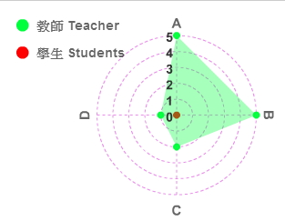

課程
課程
- 103 學年 第 2 學期
- (中 Ch.)中級俄語
- (英 Eng.)Intermediate
- 柯瓊鎣
- 必修
- 4. 0
- N/A
學年/學期 Academic Year/Semester
課程名稱 Course Name
授課教師 Instructor
修別 Type of Credit
學分數 No. of Credits
備註 Note

課程目標 Course objectives
- 在日常生活的題材範圍內教授常用的詞語以及句式，發展聽說讀寫的言語能力。
- 配合言語訓練以及語法教學提高外語表達能力，加強課文朗讀訓練。
- 透過閱讀課文，查閱詞典，完成作業等培養獨立學習能力。
課程大綱 Course Description
上課進度 Class Schedule
| 第一週 |
|
||
| 第二週 |
|
||
| 第三週 |
|
||
| 第四週 |
|
||
| 第五週 |
|
||
| 第六週 |
|
||
| 第七週 |
|
||
| 第八週 |
|
||
| 第九週 |
|
||
| 第十週 |
|
||
| 第十一週 |
|
||
| 第十二週 |
|
||
| 第十三週 |
|
||
| 第十四週 |
|
||
| 第十五週 |
|
||
| 第十六週 |
|
||
| 第十七週 |
|
||
| 第十八週 |
|
||
課程要求/評分標準
Course requirements/Grading standard
課程要求：
- 請勿無故曠課。
- 作業應當按時交上。
- 平時測驗缺考不予補考。
- 出席情況：10%
- 課堂表現：10%
- 小考：20%
- 期中考：30%
- 期末考：30%
參考書目 Textbook & references
（為維護智慧財產權，請務必使用正版書籍）
N/A
本課程附件 Course attachments
核心能力分析圖
Core competence analysis chart

- 學生自評核心能力填答率: 0% (0/19)
- A.具備基本語言能力
- B.具備語言實務應用能力
- C.具備斯拉夫知識基本知
- D.具備人文素養及國際宏觀視野
能力項目說明：